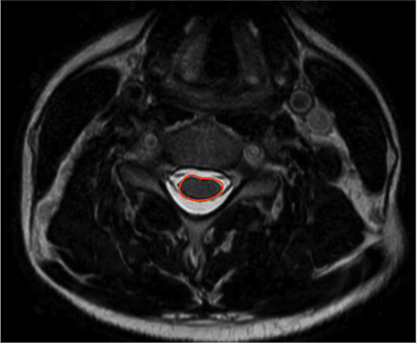

Adapted from: https://www.mriclinicalcasemap.philips.com/global/case/75/i
1) Description of Measurement
Cord cross-sectional area (CSA) quantifies the total area of the cervical spinal cord on axial MRI and is a direct morphologic marker of cord size, compression, and atrophy.
CSA is particularly valuable in the assessment of degenerative cervical myelopathy (DCM), traumatic injury, congenital stenosis, and chronic compressive lesions, as it reflects both acute deformation and chronic cord remodeling. Reduced CSA correlates strongly with neurologic deficit severity, disease chronicity, and functional outcomes, often more closely than canal measurements alone.
2) Instructions to Measure
3) Normal vs. Pathologic Ranges
Key points:
4) Important References
Takao T, Morishita Y, Okada S, et al. Clinical relationship between cervical spinal canal stenosis and traumatic cervical spinal cord injury without major fracture or dislocation. Eur Spine J. 2013 Oct;22(10):2228-31. doi: 10.1007/s00586-013-2865-7. Epub 2013 Jun 23.
Kato F, Yukawa Y, Suda K, et al. Normal morphology, age-related changes and abnormal findings of the cervical spine. Part II: Magnetic resonance imaging of over 1,200 asymptomatic subjects. Eur Spine J. 2012 Aug;21(8):1499-507. doi: 10.1007/s00586-012-2176-4.
Fehlings MG. Current Knowledge in Degenerative Cervical Myelopathy. Neurosurg Clin N Am. 2018 Jan;29(1):xiii-xiv. doi: 10.1016/j.nec.2017.09.021. Epub 2017 Oct 23.
Jannelli G, Nouri A, Molliqaj G, et al. Degenerative Cervical Myelopathy: Review of Surgical Outcome Predictors and Need for Multimodal Approach. World Neurosurg. 2020 Aug;140:541-547. doi: 10.1016/j.wneu.2020.04.233. Epub 2020 May 8.
5) Other info…
Cord CSA is best measured on axial MRI, not sagittal views
Particularly useful for:
Should be interpreted alongside:
A reduced CSA without T2 hyperintensity may still represent chronic injury
Advanced techniques (DTI, MT imaging) can further characterize microstructural injury but CSA remains the most clinically practical quantitative metric